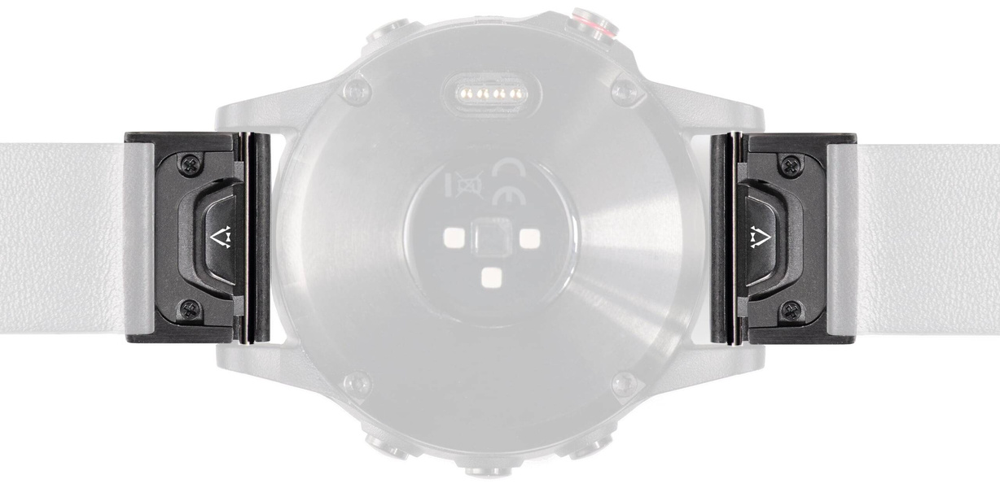
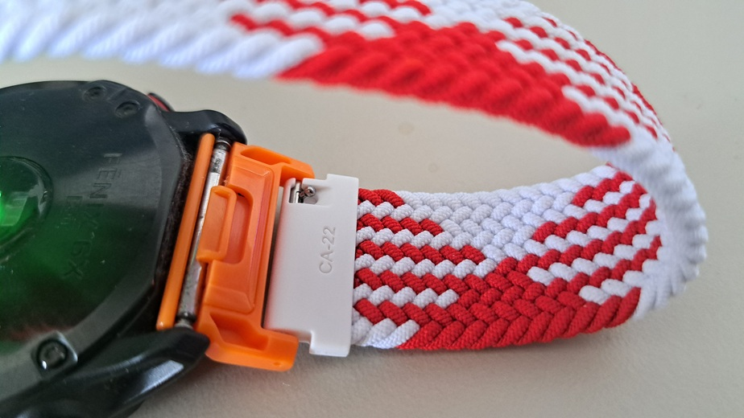

This is the second article about adapt things. Read previous article here.
Its March. The month of celebration of Baba Marta. Along with warming weather, we exchange martenitsi for good fortune and health.
One of the "stupid" advertisements grabbed my attention offering a red white band just like a martenitsa decoration pattern. Excellent, take my money, (it was like €5). But the problem appeared: it won't fit on my Garmin Fenix 6 PRO watch. Whyyyyy? Its soo complicated ... The wrist band is 22mm wide, but the watch has a 26mm lug width. I have to find an adapter to fit it. I think the problem comes from the Marketing department of the shop (they are large telecommunications company) that decided to sell that wrist band, without checking if it fits any of the watches. Actually they don't sale Garmin, because this watches are supposed to be used for sports, not as a style accessory where more client want to be stylish.
Of course the adapter exists. It simple converts the 22mm band to 26mm lug width. For my luck, I found it locally offered from someone from the Facebook groups.
Example of the adapter: 
And the result is: 
Explaining the image: It is the back-side of the watch, the martenitsa ends with a white connectors 22mm for a watch. In my case they are connected to the orange adapter, which is connected to the watch 26mm.
Of course the adapter's color didn't match the watch either the wrist band colors, but I was in a hurry and didn't want to wait a half month for an adapter with better: color white, red or black.